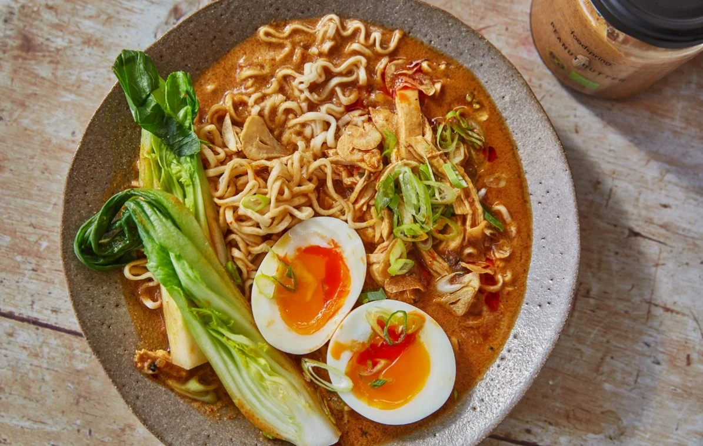

Ramen

Heart warming and spicy ramen for the cold autmn weather.
Text about this dish and how it helped me through life
Ingridients 2 people
- 2 Eggs
- 1Pk Ramen Noodles
- Sirracha Sauce
- Two handfull of Spinach
- 1/2 Romaine Lettuce
- Chicken broth
- Sesame Seeds
Steps:
- Boil two pots of water, one with 300 mL and one full pot.
- In the full pot add the eggs and let boil for 7 minutes. In the other add noodles and broth, let boil for 4 minutes.
- After two minutes of boiling noodles, add spinach.
- Cut up some lettuce or other vegetable of interest.
- Once done, peel egg and decorate with egg and vegatble. Add Siracha and Sesame seeds to taste